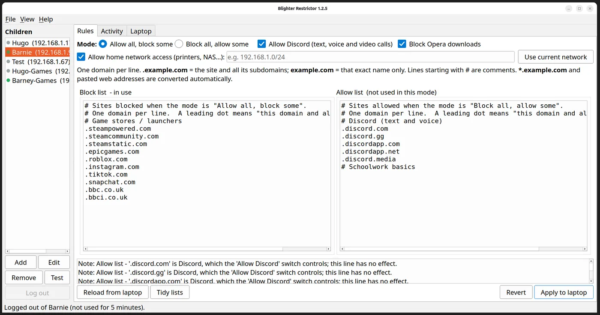

Is this for me?
Blighter lets you decide which websites your child's computer can reach, and shows you which sites they have visited.
You run the parent app on your own computer. It connects to your child's computer over your home network to change the rules and read the activity log. You can:
- Allow everything and block a few sites, or block everything and allow a few.
- Pause the restrictions when you need to.
- See which websites were visited (the site name, not individual pages).
The rules keep working when the child's computer is away from home. Changing them and viewing the log only works at home.

What you need
- Your computer: Windows or Linux.
- Your child's computer: Windows 10 or 11, or Ubuntu Linux, with an Intel or AMD processor.
- Both on your home network, for example connected to the same router.
- The administrator password for your child's computer.
- About an hour for the first setup.
Your child's computer also needs a fixed address on your home network, so the parent app can always find it. The install steps explain how.
Will my child be able to get round it?
If your child's account is an administrator account, a determined and technically confident child could undo the restrictions. For the best protection, give your child a standard (non-administrator) account.
Download
You need two parts: the parent app for your computer, and the child part for each child's computer.
For your computer (parent app)
Install
On your child's computer
- Sign in to your child's computer with the administrator account.
- Download the child installer above and open it. On Windows you'll see a blue "Windows protected your PC" message, because the installer isn't signed yet. Click More info, then Run anyway.
- Follow the installer, and choose a password when it asks. Write it down: you'll need it in the parent app.
- Give the computer a fixed address on your home network.
On your computer
- Download the parent app above and open it.
- Open Blighter Restrictor and add your child's computer, using the address and password from the steps above. You should now see your child's computer listed, with its rules and activity.
Everyday use
Open the parent app to add or remove websites, pause the restrictions, or look at the activity log.
When a site is blocked, your child sees a plain "This site isn't available" page, or the browser's own error message on secure sites.
Problems and help
The parent app can't find my child's computer
Check both computers are on the home network, and that the child's computer still has the fixed address you gave it.
A website we need is blocked
Add it to the allow list in the parent app.
Still stuck, or something confusing? Report a problem or send feedback.
Blighter is free. If it helps your family, donations on Ko-fi help pay for fixes and new features.
Want the detail? Technical information: how it works, command-line install and limitations.